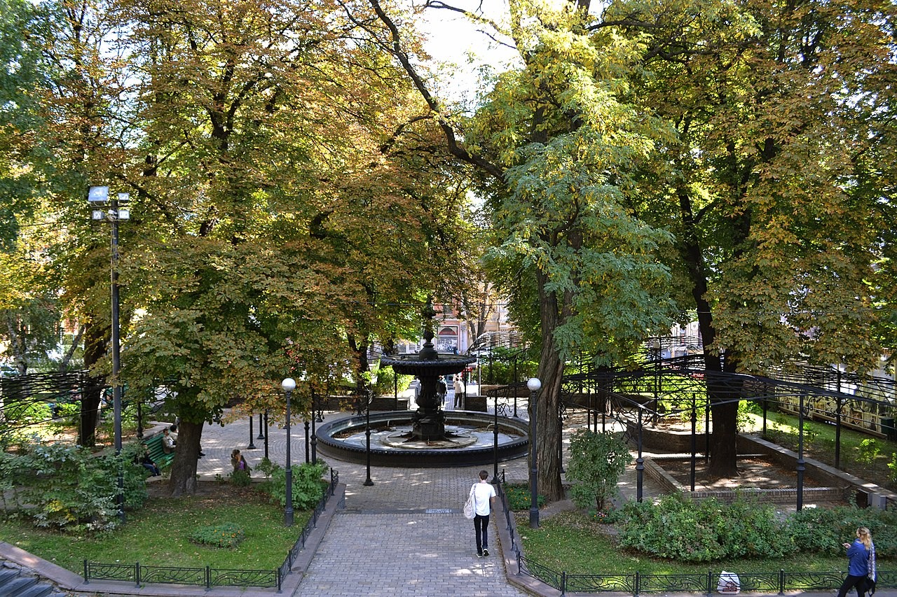

Назва
Етимологія
Згідно з легендами, назва Києва походить від імені Кия — найстаршого з трьох братів, яких вважають засновниками міста. Одна з цих легенд дійшла до нас у літописі XII ст. «Повість временних літ»[3]. У сагах Київ називався Koenugarðr[9]. Назва Kænugarður (Кьяйнуґардур) залишилася за Києвом в ісландській мові[10][11]. З 27 квітня 2022 року у Рейкʼявіку зʼявилась невеличка площа Kænugarður / Kyiv-torg[12][13]. Київ також мав тюркську назву — «Манкермен» («велике місто»), «Ківа-Манкермен», котра побутувала поряд з оригінальною назвою[14][15]. Український етнограф М. В. Закревський стверджував, що згаданий Клавдієм Птолемеєм «Азагаріум» розташовувався на місці сучасного Києва. Ю. А. Кулаковський ототожнював з Києвом Птолемеїв «Метрополь», М. Ю. Брайчевський — «Сар»[16]. За арабськими та перськими джерелами IX—X століття один із державних центрів східнослов'янських утворень звався Куявія (Куябія, Куяба). Найбільш логічно обґрунтованим є ототожнення міста Куйаби з Києвом[17][18].
Правопис
«Київський лист» з фондів бібліотеки Кембриджського університету. На думку першовідкривачів, даний лист є найдавнішим автентичним документом, написаним на території Київської Русі, і може датуватися 10 ст. н. е. Документ написаний староєврейською мовою і містить, можливо, першу згадку про Київ у формі Qiyyōb (івр. קייב). У давньоруських пам'ятках назва міста записувалася як Кыѥвъ, де ы передавала праслов'янський звук *y, а ѥ — йотований звук [e] («є»). Подібне написання тривалий час залишалося у літописах. Надалі, після припинення дії закону другої палаталізації та злиття звука [ɨ] з [і] в новий голосний передньо-середнього ряду [ɪ] з'являються написання Києвъ, Кіевъ, а після утворення «нового ятя»[19] — і «Кыѣвъ»[20], «Киѣвъ»[21], «Кіѣвъ»[22]. З упорядкуванням українського правопису XIX ст., коли за [ɪ] закріплюється літера и, а за [ji] з йотованого «нового ятя» — ї, написання набуває сучасної форми — Київ.
Переклад назви міста англійською (#KyivNotKiev)
2 жовтня 2018 року МЗС України спільно із Центром стратегічних комунікацій «StratCom Ukraine» розпочало онлайн кампанію «#CorrectUA», у рамках якої звертатиметься до іноземних ЗМІ з метою коригування правопису міста Київ (#KyivNotKiev)[23]. З'явилися перші повідомлення про коригування правопису міста Київ: у своїх текстах пишуть Kyiv замість Kiev видання BBC[24][25] і The Guardian[26]; лондонський аеропорт Лутон[27], аеропорти Будапешта і Таллінна[28], Бельгії[29] змінили назву Kiev на Kyiv. Водночас МАУ відмовились змінити Kiev на Kyiv, пояснивши, що Kiev є офіційною транслітерацією Міжнародної асоціації повітряного транспорту IATA[30]. 16 вересня 2020 року англійська Вікіпедія перейменувала статтю про Київ із «Kiev» на «Kyiv»[31], при цьому окремі статті з відповідним ойконімом лишаються без змін, зокрема про Київську Русь («Kievan Rus'»).
Географія
Розташування
Місто розташоване на півночі України, на межі Полісся і лісостепу по обидва береги Дніпра в його середній течії. Площа міста 836 км². Довжина вздовж берега — понад 20 км. Київ здавна розташовувався на перетині важливих шляхів. Ще за Київської Русі таким шляхом був легендарний «Шлях із варягів у греки». Нині місто перетинають міжнародні автомобільні та залізничні шляхи. Рельєф Києва сформувався на межі Придніпровської височини, а також Поліської та Придніпровської низовин. Більша частина міста лежить на високому (до 196 м над рівнем моря) правому березі Дніпра — Київському плато, порізаному густою сіткою ярів на окремі височини: Печерські пагорби, гори Щекавицю, Хоревицю, Батиєву та інші. Менша частина лежить на низинному лівому березі Дніпра. Житлові квартали міста оточує суцільне кільце лісових масивів.
Гідрографія
Основною рисою Києва є наявність великої гідрографічної «осі» — річки Дніпро, яка поділяє територію міста на дві частини — правобережну і лівобережну. Дніпро — найбільша в Києві, третя за довжиною і площею басейну річка Європи після Волги та Дунаю. Після будівництва каскаду дніпровських водосховищ гідрологічний режим Дніпра (зокрема і в межах Києва) змінився. Так, підпір Канівського водосховища сягає течії Дніпра в районі моста Метро на території Києва. Поблизу Києва (на північ) розташовано Київське водосховище на Дніпрі. Територія Києва також дренується численними постійними та тимчасовими водотоками, які утворюють гідрографічну мережу з близько 70 малих річок, що зрештою впадають у Дніпро. Структура гідрографічної мережі малих річок Києва визначається басейновими угрупованнями водних об'єктів. Гідрографія правого берега: центральна частина — басейн річки Либідь з її притоками, а також басейн річки Почайна (див. Опечень) з головними притоками Глибочиця та Сирець; північна та західна частини міста розташовані в басейні річки Ірпінь, а точніше її приток — річок Нивка та Горенка; південна частина міста — у басейні річки Віта. Гідрографія лівого берега: басейн річки Дарниця з її притоками. На малих річках споруджено понад 100 ставків. Є понад три десятки природних озер, серед яких можна назвати Тельбін, Райдужне, Синє, Вербне, Йорданське, Зелене озеро.
Екологія
Ліси, парки та сади становлять більш ніж половину площі Києва з майже 80 000 гектарів[32]. На одного киянина (станом на 2004 рік) припадало 22,1 м² зелених насаджень (за міжнародними нормами, цей показник має бути не меншим за 20 м²). Питаннями екології Києва опікується Державне Управління охорони навколишнього природного середовища у м. Києві, яке з 2006 року очолює Прогнімак Олександр Володимирович. У лісопарках міста гніздиться чимало видів диких птахів, зокрема хижаків та таких, що гніздяться в дуплах, мешкають різновиди кажанів. Більшість цих видів занесено до Червоної книги України. Наприклад, урочище «Лиса гора» — фактично острів посеред міської забудови Києва. Тут протягом багатьох років розташовувався військовий об'єкт, завдяки чому (за даними співробітників Інституту зоології) до останнього часу збереглися види, занесені до Червоної книги — аполлон, махаон, Синявець Мелеагр, жук-олень, бджола-тесляр, мала вечірниця. У межах міста трапляються поселення бобрів. Важливу роль у збереженні біорізноманіття міста відіграє Дніпро з його затоками, притоками, островами. Тут гніздяться десятки видів птахів. У період весняної міграції навпроти житлового масиву Оболонь 1994 року спостерігали скупчення гоголів до декількох сотень особин. На Бортницькій зрошувальній системі кілька років тому[коли?] зимувало до двох десятків орланів-білохвостів (в Україні їх зимує близько 300 особин). Кілька сотень найстаріших та видатних дерев Києва є ботанічними пам'ятками природи.
Клімат
Клімат помірно континентальний, із м'якою зимою і теплим літом. Середньомісячні температури січня −3,5 °C, липня +20,5 °C. Абсолютний мінімум — −32,2 °C (7, 9 лютого 1929 року)[33], абсолютний максимум — +39,9 °C (серпень 1898 року) (за іншими даними: +39,4 °C, 30 липня 1936 року)[33]. Середньорічна кількість опадів — 649 мм, максимум опадів припадає на липень (88 мм), мінімум — на жовтень (35 мм). Взимку в Києві утворюється сніговий покрив, середня висота покриву в лютому 20 см, максимальна — 440 см. Середньорічна загальна хмарність — 6,4 бала, максимум припадає на грудень (8,2), мінімум — на серпень (4,8). Середня вологість повітря — від 64 % (травень) до 85 % (листопад).
Символіка
Символікою міста Києва є герб Києва, прапор Києва та гімн Києва. Також місто має логотип у двох версіях: українською та англійською мовою. Сучасним гербом Києва є зображення святого покровителя міста архангела Михаїла на синьому щиті. Цей герб був офіційно затверджений Київською міською радою 18 квітня 1995 року[46]. Він є подібним до герба Київського воєводства[47]. Прапор Києва є ідентичним до герба — архангел Михаїл на синьому полотнищі. Найстарішим відомим гербом Києва є герб датований 1480 роком. На ньому зображені лук зі стрілою, який натягують дві висунуті з хмари руки. В XVII сторіччі почав використовуватись герб із зображенням арбалета замість лука, який тримає лише одна рука. Зараз цей герб використовується як сучасний герб Подільського району. Герб із зображенням архангела Михаїла до 1782 року використовувався як герб Київського Воєводства (на червоному фоні) та Київського полку (на синьому фоні), а з 1782 року до моменту захоплення Києва більшовиками як герб міста Києва[48]. Від початку 1920-х до 1969 року місто не мало власного герба, поки не був затверджений радянський герб Києва, на якому були зображені лук та гілка каштану разом із зіркою міста-героя та серпом із молотом. Радянський герб Києва слугував офіційним до затвердження сучасного герба в 1995 році.
Гімном Києва є пісня «Як тебе не любити, Києве мій!», яку в 1962 році створили композитор Ігор Шамо та поет Дмитро Луценко і яку того ж року вперше виконав співак Юрій Гуляєв[49]. Пісня була затверджена Київською міською радою як офіційний гімн 13 листопада 2014 року, а до того вона довгий час була неофіційним народним гімном[50]. Під час святкування Дня Києва 30 травня 2015 року на Софійській площі близько 3 тисяч учасників разом із міським головою Віталієм Кличком взяли участь у встановленні всеукраїнського рекорду із наймасовішого виконання цієї пісні[51][52]. Також Києву присвячена «Пісня про Київ [Архівовано 9 Березня 2020 у Wayback Machine.]» заслуженого артиста України Юрка Юрченка. Варіант логотипа Києва англійською мовою («Все починається в Києві»). Логотип Києва був створений у 2011 році дизайнером Андрієм Федоровим у рамках підготовки до Євро-2012 і був затверджений 21 грудня 2012 року[53]. Логотип являє собою поєднання чотирьох фігур, які символізують певну рису міста: крапля, яка символізує річку Дніпро; каштан, який символізує Київ як місто-парк; купол, який символізує велику кількість церков та храмів; серце, яке символізує любов киян до свого міста[54].